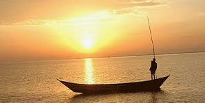
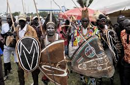

Experience an unforgettable boat ride on Lake Victoria, the world's second-largest freshwater lake, and enjoy stunning scenery, fresh breezes, and beautiful sunny-day views

Enjoy an exciting fishing adventure on Lake Victoria, where tranquil waters, beautiful views, and abundant fish create the perfect outdoor experience for beginners and seasoned anglers alike

Experience the beauty of Luo culture through traditional music, dance, storytelling, and authentic local cuisine. Connect with welcoming communities and explore the unique heritage of the people who call the Lake Victoria region home
Hover to see yourself in action
Your friendly local guide is dedicated to making your adventure unforgettable. Discover the region's natural beauty, rich culture, and fascinating history through expert guidance and personalized experiences.
Hover to see yourself in action